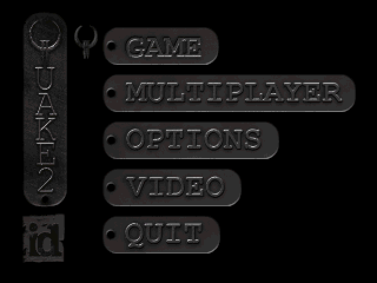
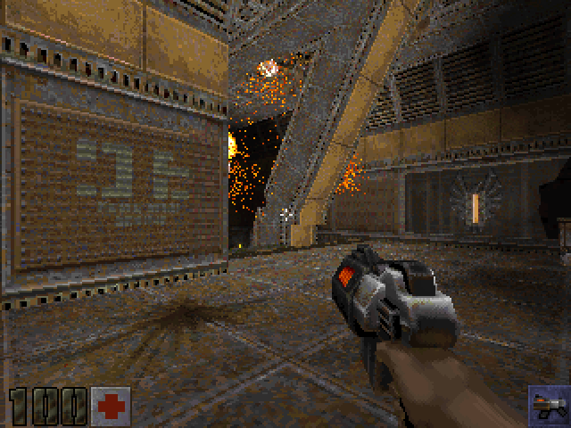

名稱：雷神之鎚2 (Quake 2，英文版)
簡介：id Sotfware 1997年出品的第一人稱射擊遊戲，由Activision代理發行。1998年分別
推出「清算（The Reckoning）」與「零點地帶（Ground Zero）」資料片，以及網路
擴充包「極限（Extremities）」 [待補]。


保護：光碟
備註：遊戲主程式與資料片只能在英文語系下的Windows安裝，請變更為英文語系後再安裝。
備註：安裝完資料片1，會自動將主程式升級至3.15；資料片2則升級至3.19。
備註：資料片1和資料片2可同時安裝。
備註：網路擴充包主要供多人連線使用，單機雖也可安裝，但只是用來進入該地圖觀看，無
任何可觸發的事件與劇情，因此並沒有意義。
備註：欲啟動資料片，必須在執行檔後加參數（必須是小寫）：+set game [目錄名]，資料
片1為xatrix、資料片2為rogue。
檔案：q2-3.20-x86-full-ctf.rar = 3.20更新檔
說明：按下~進入Console Mode，即可看到版本。